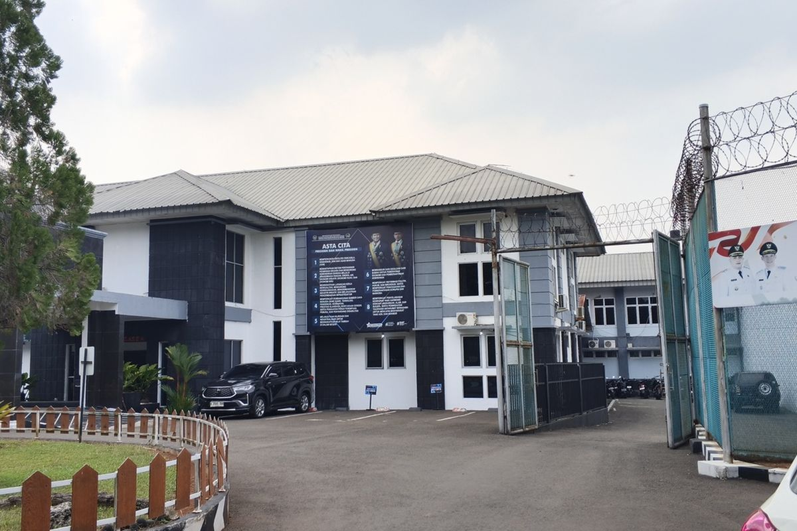

Berita Terkini!
28 September 2026
Beranda
Profil
Serba Serbi
Kontak
Skandal Lapas Cibinong
Komisi XIII DPR RI menggelar rapat dengan Direktorat Jenderal Pemasyarakatan (Ditjenpas) serta memanggil pejabat terkait setelah Ombudsman RI menemukan dugaan "kluster mewah" dan celah keamanan di Lapas Kelas IIA Cibinong. Buntut temuan ini, lima pejabat lapas telah dinonaktifkan
a
Ada Apa???
Temuan fasilitas mewah di Lembaga Pemasyarakatan Kelas IIA Cibinong oleh Ombudsman RI memicu desakan agar sanksi administratif pencopotan jabatan tidak dianggap sebagai penyelesaian akhir. Pengamat kebijakan publik Rizal Saputra menilai kasus komodifikasi ruang tahanan ini memerlukan langkah hukum pidana korupsi guna memutus rantai mentalitas transaksional oknum pengelola. Menurut Rizal skandal fasilitas mewah di Lapas Kelas IIA Cibinong yang dibongkar oleh Ombudsman RI sangat melukai rasa keadilan masyarakat dan mencederai marwah penegakan hukum.

berita lainnya====>
Game On: Cara Samsung Dukung Dunia Esports dan Game
Ujarnya...
“ Sangat memalukan dan melukai rasa keadilan masyarakat, marwah penegakan hukum juga ikut terciderai oleh perilaku oknum yang sengaja merusak penegakan hukum untuk kepentingan pribadi,” kata Rizal melalui keterangan, Senin [28/9/2026]. Rizal mengatakan, keberadaan fasilitas eksklusif di area belakang lapas, yang sempat coba disembunyikan ketika sidak pertama dilakukan, menunjukkan adanya dugaan kuat pembiaran sistemik. “ Sulit dipercaya bahwa fasilitas dengan kenyamanan di atas standar umum tahanan ini dapat berdiri dan dinikmati tanpa sepengetahuan atau koordinasi dari pengampu kebijakan di dalam lapas,” ujarnya. “ Harus ada audit forensik dan penegakan hukum pidana agar ada efek jera yang permanen,” pungkas Rizal.
©salmafauziyyah
find its true